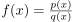
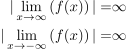
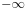
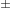
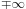

bestimmte Divergenz einer gebrochen Rationalen Funktion im Unendlichen
1. Satz
Sei  eine gebrochen rationale Funktion und der Grad des Zählerpolynoms  größer als der Grad des Nennerpolynoms, so gilt:
größer als der Grad des Nennerpolynoms, so gilt:

1
Das konkrete Vorzeichen (, , , ) hängt dabei von  ab
ab